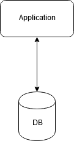
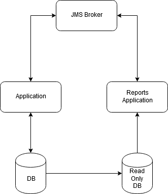
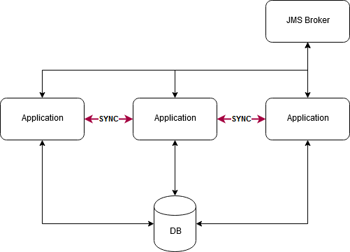
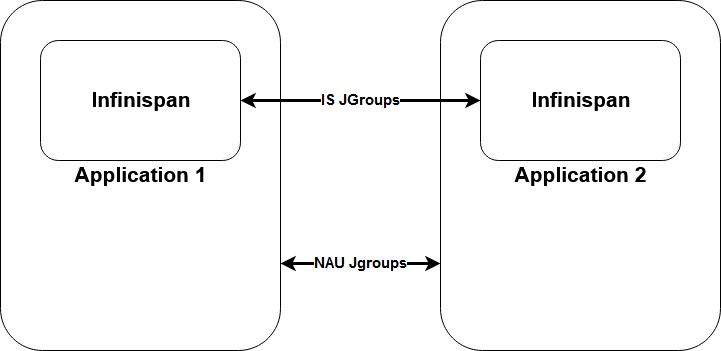
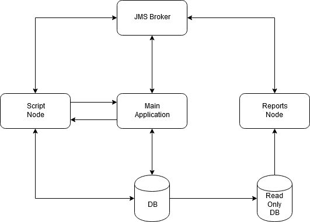
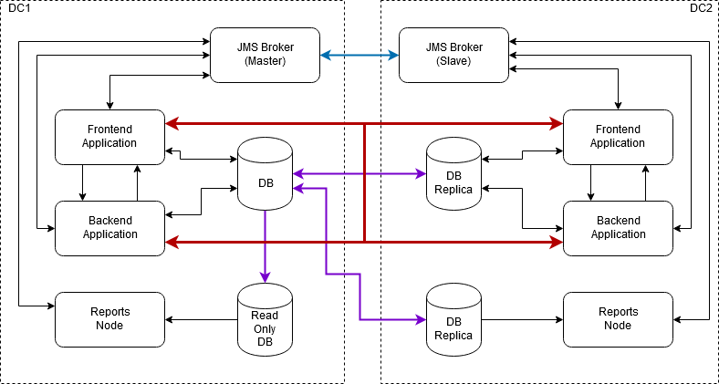

Кластеризация 2.0
Dark ages -> Bright Future
Disclaimer
Далее будут рассмотрены проблемы одного крайне крупного клиента.
Начало. Идеальная архитектура
Основные источники проблем
- Отчёты
- Фоновые процессы
Отчёты
Отчёты. Проблемы
- Отчёты работают через планировщик, занимая поток
- Построение отчёта 2-18 часов (в зависимости от параметров)
- Отчёты висят в очереди долгое время, раздражая пользователей
Отчетная нода
Отчетная нода
- Отдельный инстанс SMP
- Работа по JMS
- Работа без кешей
- Работа с БД только на чтение
Отчетная нода.JMS
- Очередь быстрых отчетов (~ 2ч)
- Очередь средний отчётов (~ 6ч)
- Очередь "Исторических" отчётов (~ 10 ч)
- Очередь получения готовых отчётов
На каждой очереди можно настроить кол-во обработчиков
"Отчетная нода"
Фоновые процессы
Фоновые процессы. Проблемы
- Большой поток входящих JMS сообщений
- Большое кол-во обработчиков приводит к задержкам обработки запросов пользователей
- Сервер приложений горит
Вопрос
А может там кластер развернем?
Cluster 1.0
Чем плох:
- Всё взаимодействие между узлами синхронное(грех)
- Узлы используют два независимых канала связи (JGroups)
- Тяжело вводить новые узлы
2 канала
"Скриптовая нода"
Скриптовая нода
- Новый инстанс SMP
- Выполняет фоновые процессы (почти весь JMS) и Quartz
- Один канал JGroups
- Основное событие в сети - инвалидация L2 cache Hibernate
- Ручная синхронизация метаданных
- Без "основного" приложения затихает
Скриптовая нода
Production launch #1
В прайм тайм нагрузки всё стремительно заблокировалось.
Беда в синхронной обработке и поведении одного протокола в JGroups
Беда в синхронной обработке и поведении одного протокола в JGroups
JGroups.NAKACK2
"NAKACK2 provides reliable delivery and FIFO (= First In First Out) properties for messages sent to all nodes in a cluster. "
/**
* Efficient way of checking whether another thread is already processing messages
* from sender. If that's the case, we return immediately and let the existing thread
* process our message...
*/
protected void removeAndPassUp(...) {
final AtomicBoolean processing=buf.getProcessing();
if(!processing.compareAndSet(false, true))
return;
}
JGroups.NAKACK2
Многопоточной обработки сообщений от одного узла может и не быть!
Solution
//Что-то будет таки синхронным
if(event.isSyncEvent()){
doProcessMessage(event,response);
return;
}
//Оффлоад на свой executor, отпускаем поток JGroups
executor.submit(() -> doProcessMessage(event, response));
Production launch #2
Снова всё стремительно блокируется в JGroups
А может ну это всё? Запустим таки кластер только с инвалидацией L2 Cache?
IS умеет в аснихронщину
Async Infinispan
Me: setup async invalidationIS: does something synchronous
Me:
JGroups.FLOW_CONTROL
/**
* Simple flow control protocol based on a credit system. Each sender has a number of credits
* (bytes to send). When the credits have been exhausted, the sender blocks. Each receiver
* also keeps track of
* how many credits it has received from a sender. When credits for a sender fall below
* a threshold, the receiver sends more credits to the sender.
*/
public abstract class FlowControl... {
/**
* Max number of bytes to send per receiver until
* an ack must be received before continuing sending
*/
protected long max_credits=500000;
}
JGroups.FLOW_CONTROL
//Настройка кредитов
flowControl.setMaxCredits("1024M");
Отправляем события асинхронно
if(!event.isSyncEvent()){
//Оффлоад на executor
executor.submit(() -> clusterBus.sendEvent(event));
return;
}
//Что-то будет таки синхронным
clusterBus.sendEvent(event);
Production launch #3
Всё работает! Ура! Нет =(
Всё периодически останавливается из-за персональных настроек пользователя
Они, внезапно, считались метаданными приложения.
Всё периодически останавливается из-за персональных настроек пользователя
Они, внезапно, считались метаданными приложения.
Production launch #4-#5
Оптимизации и таки успешный запуск и работа по сей день.
Cluster. Bright future
- N Fronends + M Backends
- "Главное приложение" -> Frontend
- "Скриптовая нода" -> Backend
- Universal = (Frontend + Backend)
- Sticky sessions
Один из вариантов, который вот-вот будет деплоиться.
Индексация
- ISDirectory - всё
- У каждой ноды своя очередь на индексацию
- У каждой ноды свой дисковый индекс
Всё классно, но есть JAXB
Он странный.
Или мы странные.
JAXB
Инициализируем настройку добавленную на другом узле
//Object о was added on other node, here we initialize that object
//with integrity check
Object o = cache.get(key)
String xml = xmlUtils.toXml() //JAXB here
if(!xml.equals(xmlFromDb))//Порой это вычислялось в false
{
saveToDb(xml);
}
Странность
Одна и таже операция в разных частях приложения работает по-разному
<!-- Сохранение настройки в БД -->
<description lang="ru"/>
<!-- Получение свежесохраненной настройки -->
<description lang="ru"></description>
Странность
Одна и таже операция в разных частях приложения работает по-разному
<!-- Сохранение настройки в БД -->
<description lang="ru"/>
<!-- LocalizedString@12345[null,lang=ru] -->
<!-- Получение свежесохраненной настройки -->
<description lang="ru"></description>
<!-- LocalizedString@54321[lang=ru] -->
Результат
- Асинхронное взаимодействие
- Любое кол-во узлов
- Балансировка нагрузки? Пожалуйста
- Горячий резерв? Пожалуйста